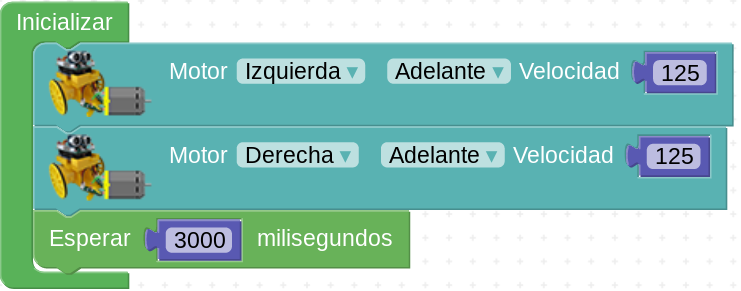
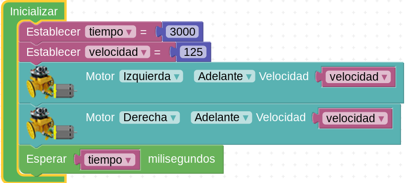

Ayuda a Mara en su aventura marciana
Task three. Paseo espacial.
Caso práctico
|
Cuaderno de bitácora. Día siguiente a nuestra llegada. Es hora de dar un paseo marciano. Mili quiere dirigirse primero hacia unas pequeñas montañas que se divisan como a unos trescientos metros. Los estudios de la sonda Mars Odyssey , anteriores a nuestro viaje, eligieron aquel lugar por considerar que tenían cuevas. Sería conveniente establecerse cerca de algunas, ya que éstas ofrecen un refugio natural contra la radiación solar ultravioleta. Marte no es como la Tierra. No tiene una atmósfera que nos proteja de los rayos ultravioleta, al no poseer capa de ozono. Nico y Mili tienen que ponerse siempre sus trajes no sólo porque la atmósfera marciana no contiene oxígeno, sino porque deben proteger sus cuerpos de la radiación. Afortunadamente mis circuitos son inmunes a los rayos y no necesito oxígeno... ¡Mientras no se me recaliente mi batería LiPo! = = = = = = = = = = = = = = = = = = = = |
|
Mara tiene que volver a la nave. Así que pone en marcha su radio baliza (no hay GPS en Marte) y localiza la nave. Pero a medio camino.... ¿De dónde ha salido esta roca?
|
|
Proceso para llevar a cabo la tarea
Variables
Imagina una caja vacía...
D1_TheOne. . Caja vacía (CC BY)
A esa caja vacía le pondremos un nombre, por ejemplo
miCajita
Modificado por Aurelio Gallardo
Y a miCajita le introduzco (nosotros diremos asignar) 5 bolas.
miCajita = 5
Ese signo igual debe leerse de esta manera: el número que está a la derecha, se le asigna a la caja miCajita. De forma que en el programa, cuando avance en él, si me refiero a miCajita y no han habido modificaciones, sabré que vale 5.
5º) Y por fin...
Esas "cajas" a las que doy nombre y le asigno números, en programación se denominan variables.
Importante: aunque al construir un programa nosotros veremos un nombre, un signo igual y un número, y no veremos una caja por ningún lado, es muy útil pensar en las variables como si el ordenador tuviese una caja, le hubiese puesto un nombre y hubiese metido un número dentro.
Incluye variables en el algoritmo
Probablemente tu programa tenga código como éste

De la aplicación arduinoblocks
Intenta que el código incluya variables

De la aplicación arduinoblocksRazona el algoritmo
Recuerda que para ayudarte a pensar puedes usar una tabla como ésta:
N |
Bloque o bloques (órdenes) |
Tiempo |
Observaciones |
| 1 | |||
| 2 | |||
| 3 | |||
| 4 | |||
| ... |
Cómo trabajar
- Normalmente se trabaja en parejas o en pequeños grupos, con un robot y un ordenador para programarlo.
- Aunque tu compañero/a sea quien maneje el ordenador o el robot, intenta siempre entender lo que estáis programando o haciendo: las órdenes o bloques que se están usando, el tiempo que tardan en ejecutarse, el orden en el que se colocan los bloques en el programa...
- Compartir las ideas con los demás, colaborar en lograr el reto, no molestar a otros grupos si están probando o trabajando...
- Si no sale a la primera, no desanimarse. Es normal que haya que hacer varias pruebas hasta que salga.
Pistas
La clave para el éxito está en:
- Pensar siempre, a priori, qué estamos haciendo.
- Averiguar los bloques de programación necesarios.
- Rellenar la tabla ANTES de programar el robot; al menos los bloques que creemos necesitar en el orden correcto.
- Elegir velocidades adecuadas (ni muy lento ni muy rápido) e ir probando tiempos.
- No pasar al paso siguiente hasta no tener seguro el anterior.
Pregunta sobre variables
Obra publicada con Licencia Creative Commons Reconocimiento No comercial Compartir igual 4.0